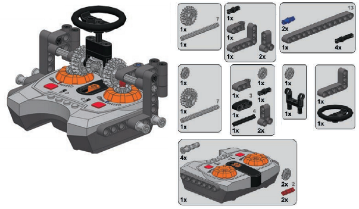
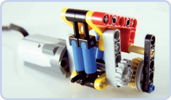

Power Functions Tutorials & Concepts
| Power Functions | Tutorials & Concepts | Sample Creations | Type of Electronics |
|---|
Modifying the basic remotes
Toggle Remote
This simple, robust modification on the toggle remote is suitable for driving and steering. These are the required parts and steps needed to build the remote. As the gear which functions as a dial rotates downward, the vehicle should turn left. When the dial rotates upward, the vehicle should turn right.
Speed Dial Remote
Modifications can also be made on the speed dial remote to control tracked vehicles, with each speed dial controlling a single track. Two speed dials are connected by a central steering wheel, which can be rotated as well as tilted forward and backward. With properly switched pole reversers, the steering wheel tilt controls drive, and the steering wheel rotation controls steering. To make the vehicle drive forward and then turn right, for instance, you would tilt the steering wheel forward and then rotate it right. Note that this modification is subject to the disadvantages of the speed control remote—that is, it is limited to sending no more than two commands per second. It works best when operated carefully and not too fast.


Heavy duty transmission
A sequential yet nonsynchronized transmission designed specifically to handle high torque, shown here with the PF XL motor. Gears are shifted by sliding part of the transmission together with the motor attached to it. This makes the transmission simpler and reduces the number of gears.
Coupling motors with adders
Two PF Medium motors are driving the differential case (blue) and one of the axles (green). The other axle (red) is the output. When a differential is used to couple motors, any difference between inputs will be equalized by the system of the differential’s inner gears. The output will be driven by the sum of the inputs’ torques and the average of their speeds.
Flashing lights
To make LEGO LEDs flash, we need a switch and a motor. Using an old 9V switch is the easy way, but we can use a Power Functions switch as well, which we can connect via an eccentric mechanism. Figures 8-27 and 8-28 show both versions. With the old 9V switch, adding the ability to flash is simple: The switch can be connected directly to a motor whose rotary motion will keep turning it on and off, thus making the lights connected to the switch flash. The flashing frequency can be adjusted by adding a gear between the motor and the switch or by changing the motor’s speed.
Creating air pressure with motors
A compressor that can hold two or four pumps while making use of two 36-tooth gears. The orientation of the gears relative to each other is maintained by two 12-tooth gears on a separate axle, which also transfers drive between them. It’s possible to connect two or more such compressors side by side to increase the number of pumps.
You might ask why we would want to use so many pumps in the first place. It’s because a single pump has a very small capacity and is, therefore, not very powerful, taking quite a while to fill just a single large pneumatic cylinder.
A rocking compressor. While it doesn’t extend pumps to their maximum, it can hold up to 18 pumps in two alternating groups. It moves the pumps in a reciprocating motion, rather than the rotary motion used in other compressors, which results in a more compact build. Moreover, it has a gearing at the side with four possible gear combinations.
